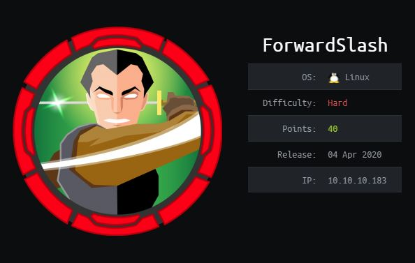

ForwardSlash - Writeup
Introduction
Basic enumeration
First of all we are going to start with a simple nmap scan, that allows us to show all forwarded ports of the targeted machine. The -sC parameter is used to perform a scan using the default set of scripts. The -sV parameter is used to perform an automated version scan of the targeted machine. The -p- argument is used to perform a network scan of all available 65,535 TCP ports of that server. -oN is used to store the result of the scan in a locally saved file.
nmap -sC -sV -p- -oN full 10.10.10.176 -v